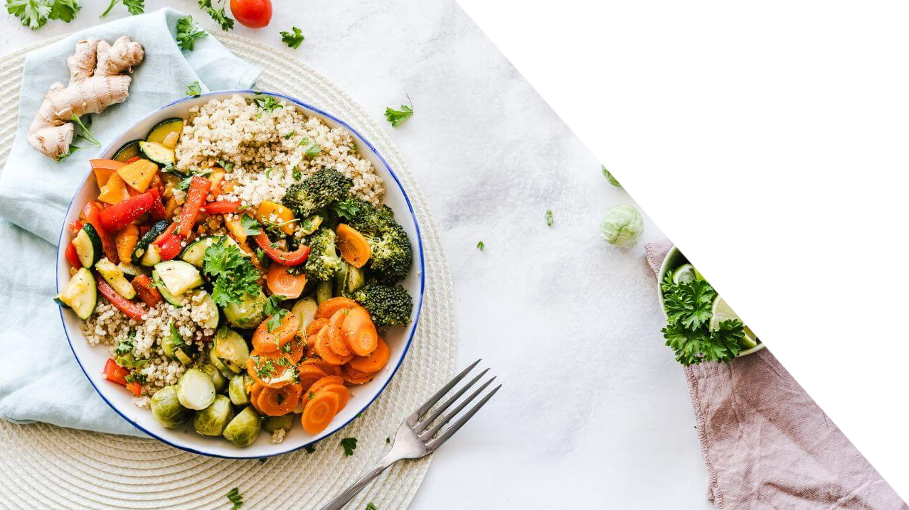

Um guia alimentar é um conjunto de orientações sobre como se alimentar de forma saudável. Ele explica quais tipos de alimentos devemos consumir com mais frequência (como frutas, verduras, grãos e alimentos naturais) e quais devemos evitar ou reduzir (como ultraprocessados, refrigerantes e frituras).
O objetivo do guia é ajudar as pessoas a fazerem escolhas alimentares melhores, promovendo saúde, bem-estar e qualidade de vida.
Além disso, ele também fala sobre hábitos à mesa, como comer devagar, valorizar a comida caseira e respeitar os sinais de fome e saciedade.
Faça já seu Guia Alimentar completo:
Check-up
O check-up é uma avaliação médica completa que ajuda a identificar problemas de saúde precocemente, mesmo quando não há sintomas aparentes. Ele inclui exames físicos, laboratoriais e de imagem, além de uma revisão do histórico médico e familiar.
Realizar check-ups regulares é importante para prevenir doenças, monitorar condições crônicas e manter um estilo de vida saudável. A frequência dos check-ups pode variar conforme a idade, sexo, histórico familiar e fatores de risco individuais.
Faça já seu Check-up completo:

Receitas
Receitas são instruções detalhadas que orientam o preparo de pratos culinários. Elas incluem uma lista de ingredientes necessários, as quantidades exatas, e um passo a passo do modo de preparo.
As receitas podem variar desde pratos simples até refeições elaboradas, e são essenciais para quem deseja cozinhar, seja em casa ou profissionalmente. Elas ajudam a garantir que o prato final tenha o sabor e a textura desejados.
Explore diversas receitas saudáveis:
Exercícios
Exercícios são atividades físicas planejadas e estruturadas que visam melhorar a saúde, a forma física e o bem-estar geral. Eles podem incluir uma variedade de movimentos, como correr, nadar, levantar pesos, praticar yoga, entre outros.
A prática regular de exercícios traz inúmeros benefícios, como o fortalecimento muscular, a melhora da resistência cardiovascular, o controle do peso corporal e a redução do risco de doenças crônicas.
.png)
.png)